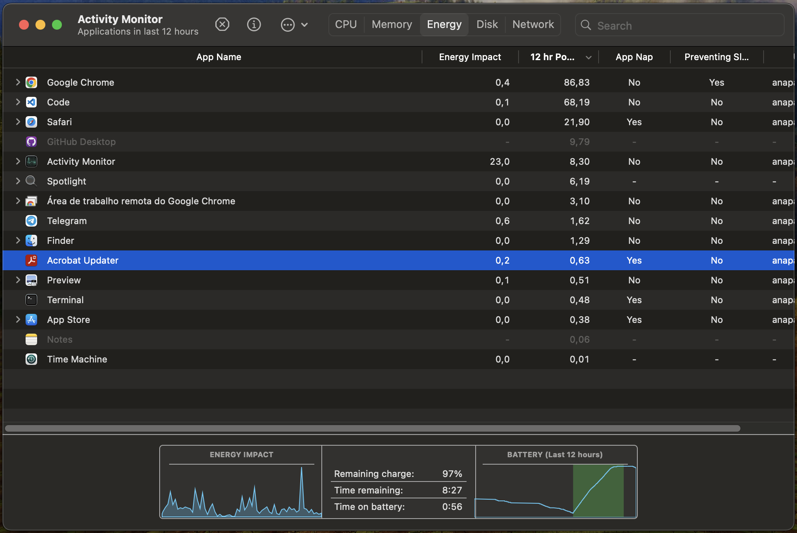
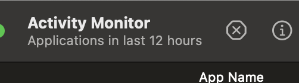

Ou se você se sentir muito incomodada, é possível a fechar temporariamente por meio de um programa nativo do macbook, o ActivityMonitor
Esta tentando atualizar mas fica presa em carregamento infinito, basta não clicar no botão azul "Continue" que tudo continuará dando certo!
Abre de vez em quando, com certeza com menos frequência que a do Acrobat, e ela fica nessa de procurar por atualizações também em carregamento infinito!
Neste caso temos o ❌ vermelinho pra clicar, o que facilita o fechamento!
Antes de tudo, é importante destacar que o efeito desta ação pode não durar por muito
tempo, mas ja é o suficiente para o TOC parar de incomodar e você poder trabalhar em paz
sem ver a janelinha ali no dock (barra inferior do mac)
O Activity Monitor nada mais é que um Gerenciador de Tarefas (Windows) do macOS!
Ele esta presente em todos os Macbooks e Macs.
Para utilizá-lo, basta:
Para isso vamos Abrir o "Spotlight Search"
com as teclas:
Digite seu nome... ⏩ "Activity Monitor" e de Enter...
No exemplo abaixo eu fiz com o Acrobat Updater
Após selecionar a tarefa,
isso lhe mostrará as opções de fechamento
Para não forçar nada.
Que também não tem problema em utilizar!
Aliás, para o Acrobat Updater, esta provavelmente será a opção definitiva a se utilizar!